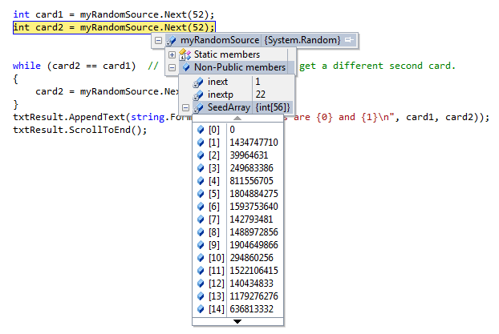
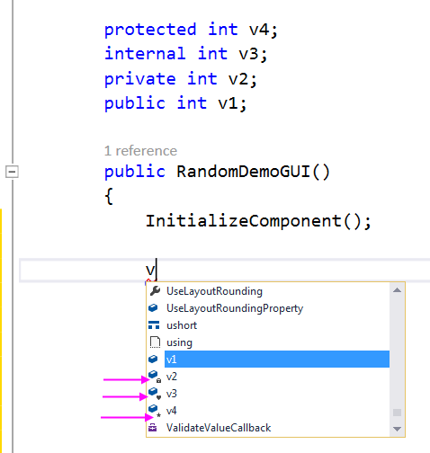

23. The .NET Framework¶
The .NET framework is a software framework developed by Microsoft. It has two main parts:
A large collection of pre-written classes called the .NET Framework Class Library (see http://msdn.microsoft.com/en-us/library/gg145045.aspx) that we can use when we write our programs.
A component called the Common Language Runtime (CLR). This is a software environment (as opposed to a hardware environment) that runs our programs for us. It provides services like debugging, exception handling, security, and management of memory for our programs.
As the “common” part of the name suggests, the CLR can run many different languages, not just C#. So we could write our programs in languages like Visual Basic, C#, F#, C++, Haskell, Ruby (or about 50 others). We can even write programs that mix components from different languages.
They all share the same Framework Class Library, so learning a bit about this library here will be useful when we move to another .NET programming language in future.
Other mainstream languages like Java and Python also have huge libraries. These libraries help for all kinds of scenarios — accessing the network, working with files, doing mathematical calculations, organizing collections, encryption, writing web servers, and so on.
When we see adverts that want to hire “experienced C# programmers” or “experienced Java programmers”, it really means “knows the language, and also knows their way around some of the important libraries”.
We’ve used many of the libraries already in this book: every time we
have a using directive we’re telling the compiler that we want
to use some or other functionality from a library.
So for the rest of this chapter we’ll just pick a few small samples, we’ll show how to use them, and we’ll discuss a couple of new C# language features that are related.
23.1. Random numbers¶
Although we’ve seen them before in the book, we’ll cover the Random class again. Here are a few typical uses of random numbers:
- To play a game of chance where the computer needs to throw some dice, pick a number, or flip a coin,
- To shuffle a deck of playing cards randomly,
- To allow/make an enemy spaceship appear at a random location and start shooting at the player,
- To simulate possible rainfall when we make a computerized model for estimating the environmental impact of building a dam,
- For encrypting banking sessions on the Internet.
C# provides a class Random that helps with tasks like this. We can
look it up using help, but here are the key things we’ll do with it:
Line 8 defines a variable that can reference a Random number generator object. Line 13 instantiates the object, and makes our variable reference it. Then in lines 20, 21 and 24 we call a method of the object.
The Next call randomly picks an integer less than the upper bound argument.
All the values have an equal probability of occurring
(i.e. the results are uniformly distributed).
The Next method has another overloading that allows us to specify both a lower bound
and an upper bound. The lower bound is inclusive (the generator might pick it),
while the upper bound is exclusive. Of we don’t supply a lower bound, 0 is used.
So if we want to throw two dice, and the outcome for each
needs to be an integer between 1 and 6 (inclusive), we could do it in either of
two ways:
The NextDouble method returns a floating point number in the interval [0.0, 1.0) — the
square bracket means “closed interval on the left” and the round parenthesis means
“open interval on the right”. In other words, 0.0 is possible, but all returned
numbers will be strictly less than 1.0. It is usual to scale the results after
calling this method, to get them into an interval suitable for our application. In the
case shown below, we generate a uniformly distributed double random number in the range [20, 27.5):
(Hey, that’s quite a mouthful of dense terminology — “uniformly distributed double random number”.
So it says a lot!)
Where did the 7.5 and the 20 come from? Well the size of the range is 27.5-20, or 7.5. So once we’ve generated the random number in the range [0.0, 1.0) we scale it by multiplication. (We might like to think of scaling as stretching the number line like a rubber band.) That will leave us with a random number in the range [0.0, 7.5). Then we’ll add 20 to give us a number in the range we want.
23.2. Repeatability and Testing¶
Random number generators are based on a deterministic algorithm — repeatable and predictable. So they’re called pseudo-random generators — they are not genuinely random, like flipping a coin or throwing some dice. They start with a seed value. Each time we ask for another random number, we’ll get one based on the current seed, and the seed itself will be updated for next time.
If we’re interested, we can put a breakpoint in our code and inspect the internal state of the generator. It uses an array of 56 integers — or 1792 bits — as its seed.
For debugging and for writing unit tests, it is convenient to have repeatability — programs that do the same thing every time they are run. We can arrange this by forcing the random number generator to be initialized with a known seed every time. (Often this is only wanted during testing — playing a game of cards where the shuffled deck was always in the same order as last time we played would quickly become boring!)
This alternative way of instantiating a random number generator provides an explicit
starting seed. Without this argument, the system probably uses something based
on the time. So with a fixed starting seed, grabbing some random numbers from
myRandomSource today will give us precisely the same random sequence as it
will tomorrow! Try it!
23.3. Access Modifiers — public, private, internal and protected¶
As we start combining libraries and building bigger programs we require
some control over “which parts of the program can use which methods or
properties”. For example, look above at where we inspected the state of
myRandomSource. It holds some state in an array called SeedArray.
Even though this array exists in the object, there is no way for our program
to either read or alter the elements of the array. This is because the
array is defined with an access modifier private.
Any member of a class (a member could be a variable, a method, a type, or some other things)
in a class that is tagged as private means “cannot be used from outside this class”.
Methods within the class can use other private methods, or private variables and types.
The opposite of private access is public access. A member that is tagged
as public can be called and used from other code in other classes.
When our programs get bigger we find that the “all-or-nothing” distinction
that public and private gives us sometimes needs to be more refined.
internal and protected access modifiers give us these in-between capabilities.
internal access means accessible to the class and any other
class that is part of the same project, but not accessible to
code in other projects.
protected access means accessible to the class and any children of the class,
but otherwise private. We’ve seen some hierarchical organization of GUI
types and Exception types, and we’ve talked about the is-a relationship
that denotes a child-parent relationship between types. So protected access
means “available to my descendants”.
What happens if we are lazy and don’t put any access modifier on our methods or variable definitions within a class? The default assumption in that case is the “safest” one — they’ll be private. (The rule is modified when something is declared in a namespace: if we don’t put an access modifier on our class definition, it becomes internal rather than public.)
Keep an eye on IntelliSense when it pops up: if a member is not public, it puts an extra little icon into the IntelliSense: a padlock for private, a heart (why a heart?, I hear you ask) and a star for protected. So here is a simple experiment that defines four variables with four different access modifiers, and seeing what we get from IntelliSense:
Let us now revisit the sample program at the top of this chapter.
Lines 6 and 10 are the only public modifiers. Line 6 defines a new
kind of Window called RandomDemoGUI. It is the name I chose
for my GUI. Our GUI window is-a Window, and it is
public. So any other piece of code can see this new class. Line 10
has the code for the constructor — the code that gets executed whenever
we instantiate a new instance of this type of window. It is also public,
so what that means is “outsiders can create new instances of RandomDemoGUI windows.”
But everything else in the class is private (including the variable myRandomSource,
because we never gave it any access modifier).
23.4. Namespaces¶
To help organize the many classes and names in the .NET Framework Class Library,
and in our own software, they are
grouped into namespaces. For example, the System namespace contains
a number of classes: we’ve seen the System.Math class, the System.Random class
and there are also others, like System.GC. When we use a dot like this it means
“the Random class in the System namespace. We say the name Random is qualified.
Namespaces can probably be thought of somewhat like a folder system on a disk. If files
are in different directories, we can have many different files called ReadMe.txt.
Similarly, in C#, we can have many different classes with the same name, as long
as we keep them in separate namespaces.
When we put using directives in our code (line 1 of the sample program at the top
of this chapter), it tells the compiler to automatically search those namespaces.
So when we use a “shorthand” type name like Random or Turtle,
or File, the compiler will search in the namespaces and know that
we mean System.Random, ThinkLib.Turtle, or System.IO.File.
Line 4 of our program (the one at the start of this chapter) says that our new class,
RandomDemoGUI, is defined
in a namespace called Fragments. The namespace is often set to be the
same as the name of the project we choose. So in my case, I asked Visual Studio
to create a new WPF project called Fragments. It then chose the namespace Fragments for me.
We can comment out the using directives in our program, one at a time, and then
fix any errors we get by fully qualifying the places where we use names from
the namespace. It should convince us that the using directive is not
an essential feature of C# — it is just a convenient mechanism. We sometimes
call features that provide convenience (but no new functionality) syntactic sugar.
Namespaces can contain other namespaces, (just as directories can contain
other directories). So on line 2 of our program we use the System.Windows namespace.
This means that Windows is a namespace within the System namespace.
There are also more deeply nested namespaces, like System.Net.Security,
System.Windows.Media.Imaging and System.Windows.Shapes.
23.5. The partial keyword¶
There is one other special keyword in our program that deserves an explanation:
On line 6 we have the word partial attached to our class. It means that
there can be other code elsewhere (that we don’t necessarily get to see) that
is also part of this same class.
In WPF programs, some of the code is generated from our window’s XAML
which describes our GUI. It is
ugly, but if we want to take a peek and see the “helper code” that
the compiler wrote for us behind our back, we can start at our project folder and
look for any .cs files in the sub-folder obj\x86\Debug.
23.6. You call it “Int32”, but we call it “int”¶
Because the .Net Framework Class Library serves many languages, not only C#, its classes and values have names that may not always be the same as the names we prefer to use in C#, or in Visual Basic, or F#. We’ve seen a few examples already:
- The framework has a type called
System.Int32. In C#, we call that same typeint. If we have ausing System;directive at the top of our code, we can useInt32without having to fully qualify it, as shown on line 4 above. - The framework type
System.Stringwith a capital letter corresponds to the C# typestring. SoStringworks in our C# programs too. - The framework type
System.Booleanis an alias for the C# typebool. In line 2, the framework also formats its Boolean values as “False” and “True” with capital letters, whereas in C# we prefer the valuesfalseandtrue. System.Objectand the C#objectare aliases.
So be aware that occasionally we might see the framework spelling of a type name, or the framework
representation of a value, rather than the preferred C# spelling. In line 4 above, if we set a breakpoint
and inspect k, we’ll notice that we’re told that it is an ordinary int, the same as x.
This is further confirmation that the framework names and the C# names are often aliases of each other.
23.7. Glossary¶
- access modifier
- In C#, one of four keywords:
public,private,internalandprotectedthat determine how other parts of the software may access (or may be restricted from accessing) a member. - deterministic
- Something that is repeatable, and will always produce the same results for the same inputs. See also non-deterministic.
- member
- A member of a class is something that belongs to the class: e.g. variables, methods, properties, constructors, constants, and more. (See http://msdn.microsoft.com/en-us/library/vstudio/ms173113.aspx if you’re inquisitive about other kinds of members.)
- namespace
- A grouping for names that helps organize software. Namespaces
mean that that the same common names
can be used in different namespaces without ambiguity.
(We probably have plenty of different
classes called
MainWindowif we’re doing all these textbook exercises.) - non-deterministic
- Something that has an element of chance built into in. One is not sure when we flip a coin whether it will land on heads or tails. We use random number generators in programs to provide (fake) non-determinism.
- pseudo-random
- Something that appears to be random, but isn’t really random. Our random number generators are based on a deterministic algorithm and some seed value. If you know the seed, you know what the next random number will be. Since random numbers are used for setting up secure banking sessions and for encryption, one popular attack to try to break security is to see if one can guess what values the random number generator is going to produce next.
- qualified name
- A name that is prefixed by some contextual information, e.g.
System.Random,Math.Sqrt, orSystem.IO.File. - seed
- A value which a pseudo-random number generator uses to initialize its algorithm.
- syntactic sugar
- Something that makes it sweeter or easier to express our intentions,
but it doesn’t allow us to do anything fundamentally new. For example,
a
switchstatement in C# is really just syntactic sugar, because we could do the same thing withifstatements. usingdirective- A line at the top of a file that makes all the names in that namespace available without the need to qualify them.
23.8. Exercises¶
- The
Randomclass has a nasty surprise if you instantiate two instances in quick succession. Read the “Remarks” section of the help documentation forRandom, understand why there is a problem, and see if you can replicate their evidence.